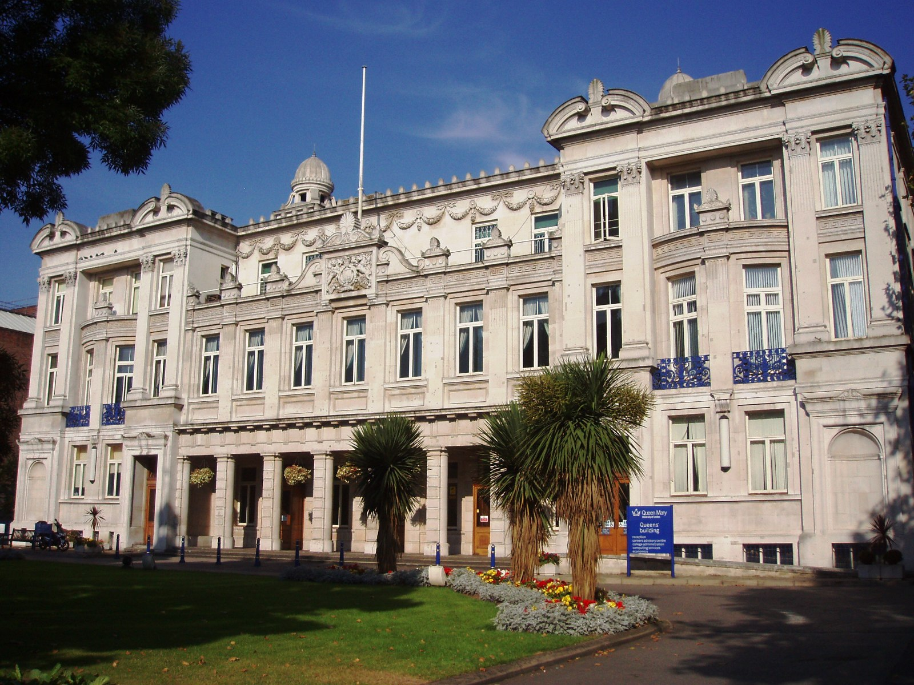
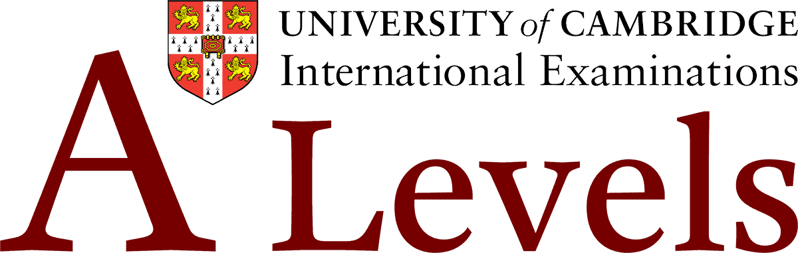
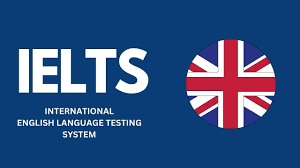

Higher Education
Queen Mary University of London
Degree: BSc Computer Science
September 2025 - Present
Currently in my second year. I completed Year 1 with an 84.7% average, earning A grades across all eight modules and the Top XP Prize for Level Up activities associated with Fundamentals of Web Technology.
Year 1 Modules:
- Procedural Programming (Java)
- Object-Oriented Programming (Java)
- Computer Systems and Networks
- Logic and Discrete Structures
- Web Technology (HTML, CSS, PHP)
- Automata and Formal Languages
- Information System Analysis
- Professional Research and Practice


Advanced Level (A & AS Level)
Private Candidate
June 2023 & June 2024
A Level (June 2024)
- Physics (9702): A (83 PUM)
- Computer Science (9618): A (81 PUM)
- Mathematics (9709): B (79 PUM)
AS Level (June 2023)
- Physics (9702): A (86 PUM)
- Computer Science (9618): A (85 PUM)
- Mathematics (9709): A (83 PUM)
Ordinary Level (O Level) & IELTS
Private Candidate
June 2022 & August 2024
O Level (June 2022)
- Computer Science (2210): A* (93 PUM)
- Physics (5054): A* (93 PUM)
- Biology (5090): A* (94 PUM)
- Chemistry (5070): A* (91 PUM)
- English Language (1123): A* (90 PUM)
- Mathematics (4024): A (89 PUM)
- Additional Mathematics (4037): A (85 PUM)
IELTS Academic (2024)
- Overall: 7.5 (CEFR Level: C1)
- Listening: 8.5 | Reading: 7.5 | Writing: 6.5 | Speaking: 6.5
